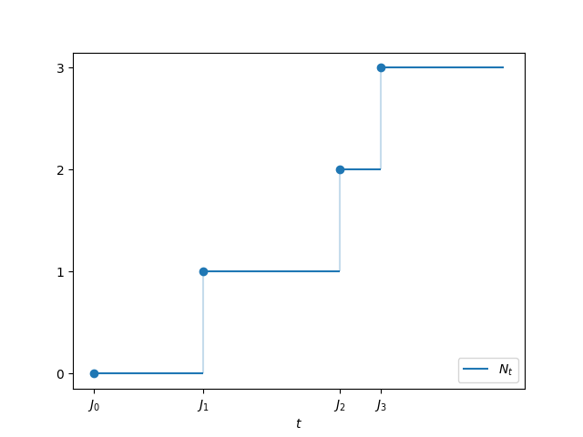
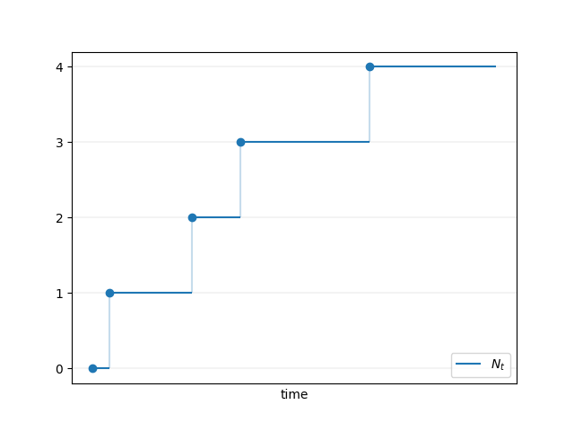
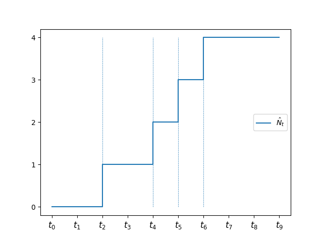
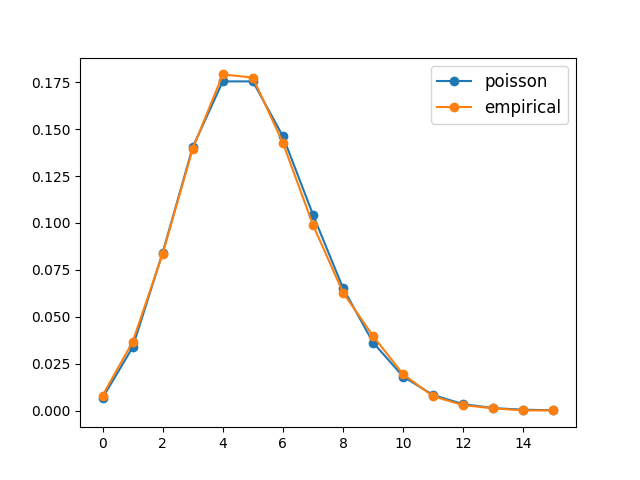
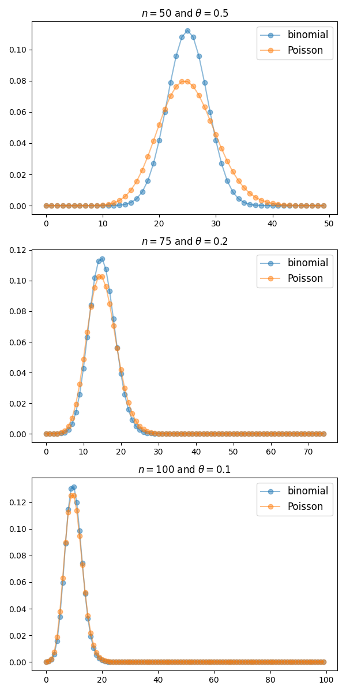

Proses Poisson
Selain pustaka yang tersedia di Anaconda, kuliah ini memerlukan pustaka berikut:
# Build luring hilir: perintah pemasangan paket dari sumber dihapus.Gambaran umum
Proses penghitungan menghitung banyaknya “kedatangan” yang terjadi hingga waktu tertentu (misalnya, banyaknya pengunjung yang datang ke suatu situs web atau banyaknya pelanggan yang tiba di sebuah restoran).
Proses penghitungan menjadi proses Poisson ketika interval waktu antara kedatangan saling IID dan berdistribusi eksponensial.
Distribusi eksponensial dan proses Poisson memiliki hubungan yang mendalam dengan rantai Markov waktu kontinu.
Sebagai contoh, proses Poisson adalah salah satu contoh nontrivial paling sederhana dari rantai Markov waktu kontinu.
Selain itu, ketika rantai Markov waktu kontinu melompat di antara keadaan-keadaan, waktu antara lompatan tersebut harus berdistribusi eksponensial.
Dalam membahas proses Poisson, kita akan menggunakan impor berikut:
import numpy as np
import matplotlib.pyplot as plt
import quantecon as qe
from numba import njit
from scipy.special import factorial, binomProses Penghitungan
Mari kita mulai dari kasus umum, yaitu proses penghitungan sembarang.
Lompatan dan Hitungan
Misalkan \((J_k)\) adalah barisan naik peubah acak tak-negatif yang memenuhi \(J_k \to \infty\) dengan peluang satu.
Sebagai contoh, \(J_k\) dapat menyatakan waktu pelanggan ke-\(k\) tiba di sebuah toko.
Kemudian
\[ N_t := \sum_{k \geq 0} k \mathbb{1} \{ J_k \leq t < J_{k+1} \} \]
adalah banyaknya pelanggan yang telah berkunjung hingga waktu \(t\).
Gambar berikut mengilustrasikan definisi \(N_t\) untuk suatu barisan lompatan tertentu \(\{J_k\}\).
Tampilkan kode sel 1
Ks = 0, 1, 2, 3
Js = 0, 0.8, 1.8, 2.1, 3
n = len(Ks)
fig, ax = plt.subplots()
ax.plot(Js[:-1], Ks, 'o')
ax.hlines(Ks, Js[:-1], Js[1:], label='$N_t$')
ax.vlines(Js[:-1], (0, Ks[0], Ks[1], Ks[2]), Ks, alpha=0.25)
ax.set(xticks=Js[:-1],
xticklabels=[f'$J_{k}$' for k in range(n)],
yticks=(0, 1, 2, 3),
xlabel='$t$')
ax.legend(loc='lower right')
plt.show()
Definisi alternatif yang ekuivalen adalah
\[ N_t := \max \{k \geq 0 \,|\, J_k \leq t \} \]
Sebagai fungsi dari \(t\), proses \(N_t\) disebut proses penghitungan.
Waktu lompatan \((J_k)\) kadang-kadang disebut waktu kedatangan, sedangkan interval \(J_k - J_{k-1}\) disebut waktu tunggu atau waktu tinggal.
Waktu Tinggal Eksponensial
Proses Poisson adalah proses penghitungan dengan waktu tinggal eksponensial yang saling independen.
Secara khusus, misalkan waktu kedatangan diberikan oleh \(J_0 = 0\) dan
\[ J_k := W_1 + \cdots + W_k \]
dengan \((W_i)\) IID eksponensial dengan suatu laju tetap \(\lambda\).
Proses penghitungan \((N_t)\) yang bersesuaian disebut proses Poisson dengan laju \(\lambda\).
Alasan di balik nama tersebut adalah bahwa, untuk setiap \(t > 0\), peubah acak \(N_t\) berdistribusi Poisson dengan parameter \(t \lambda\).
Dengan kata lain,
\[ \PP\{N_t = k\} = e^{-t \lambda} \frac{(t \lambda)^k }{k!} \qquad (k = 0, 1, \ldots) \]
Sebagai contoh, karena \(N_t = 0\) jika dan hanya jika \(W_1 > t\), kita memiliki
\[ \PP\{N_t =0\} = \PP\{W_1 > t\} = e^{-t \lambda} \]
dan ruas kanan tersebut sama dengan persamaan poissondist ketika \(k=0\).
Hal ini memungkinkan pembuktian dengan induksi, yang memakan waktu tetapi tidak sulit — rinciannya dapat ditemukan pada \(\S29\) dalam Howard (2017).
Cara lain untuk menunjukkan bahwa \(N_t\) berdistribusi Poisson dengan parameter \(t\lambda\) adalah dengan menggunakan teorema jumlah eksponensial.
Kita amati bahwa
\[ \PP\{N_t \leq n\} = \PP\{J_{n+1} > t\} = 1 - \PP\{J_{n+1} \leq t\} \]
Dengan memasukkan bentuk CDF Erlang pada persamaan erlcdf dengan bentuk \(n+1\) dan laju \(\lambda\), kita memperoleh
\[ \PP\{N_t \leq n\} = \sum_{k=0}^{n} \frac{(t \lambda )^k}{k!} e^{-t \lambda} \]
Ini adalah CDF (bernilai bilangan bulat) untuk distribusi Poisson dengan parameter \(t \lambda\).
Salah satu latihan di akhir kuliah meminta Anda memverifikasi secara informal melalui simulasi bahwa \(N_t\) adalah Poisson-\((t \lambda)\).
Gambar berikut menunjukkan satu realisasi proses Poisson \((N_t)\), dengan lompatan pada setiap kedatangan baru.
Tampilkan kode sel 2
np.random.seed(1234)
T = 5
Ws = np.random.exponential(size=T)
Js = np.cumsum(Ws)
Ys = np.arange(T)
fig, ax = plt.subplots()
ax.plot(np.insert(Js, 0, 0)[:-1], Ys, 'o')
ax.hlines(Ys, np.insert(Js, 0, 0)[:-1], Js, label='$N_t$')
ax.vlines(Js[:-1], Ys[:-1], Ys[1:], alpha=0.25)
ax.set(xticks=[],
yticks=range(Ys.max()+1),
xlabel='time')
ax.grid(lw=0.2)
ax.legend(loc='lower right')
plt.show()
Inkremen Stasioner dan Independen
Salah satu ciri yang menentukan dari proses Poisson adalah bahwa proses ini memiliki inkremen yang stasioner dan independen.
Hal ini disebabkan oleh sifat tanpa ingatan dari distribusi eksponensial.
Artinya,
- peubah-peubah \(\{N_{t_{i+1}} - N_{t_i}\}_{i \in I}\) saling independen untuk setiap barisan hingga \((t_i)_{i \in I}\) yang naik ketat, dan
- distribusi \(N_{t+h} - N_t\) bergantung pada \(h\), tetapi tidak pada \(t\).
Pembuktian terperinci dapat ditemukan pada Teorema 2.4.3 dalam Norris (1998).
Alih-alih mengulanginya, kita memberikan intuisi melalui suatu pendekatan diskret.
Dalam pembahasan berikut, kita menggunakan fakta yang dikenal luas: jika \((\theta_n)\) adalah barisan sedemikian sehingga \(n \theta_n\) konvergen, maka
\[ \text{Binomial}(n, \theta_n) \approx \text{Poisson}(n \theta_n) \quad \text{untuk } n \text{ besar} \]
(Latihan meminta Anda memeriksa klaim ini secara visual.)
Sekarang kita kembali ke pembahasan sebelumnya, tempat kita menghubungkan distribusi geometrik dengan distribusi eksponensial.
Kita tetapkan \(h > 0\) kecil dan \(t_i := ih\) untuk semua \(i \in \ZZ_+\).
Misalkan \((V_i)\) adalah peubah acak biner IID dengan \(\PP\{V_i = 1\} = h \lambda\) untuk suatu \(\lambda > 0\).
Menghubungkan dengan pembahasan sebelumnya,
- pada setiap \(t_i\) sebuah toko dikunjungi oleh tepat nol atau satu pelanggan;
- \(V_i = 1\) berarti seorang pelanggan berkunjung pada waktu \(t_i\); dan
- kunjungan terjadi dengan peluang \(h \lambda\), yang sebanding dengan panjang interval antara titik-titik kisi.
Kita telah mempelajari bahwa waktu tunggu hingga kunjungan pertama kira-kira berdistribusi eksponensial dengan laju \(\lambda\).
Karena \((V_i)\) IID, hal yang sama berlaku untuk waktu tunggu kedua dan seterusnya.
Selain itu, waktu-waktu tunggu tersebut independen karena bergantung pada subhimpunan-subhimpunan terpisah dari \((V_i)\).
Misalkan \(\hat N_t\) menghitung banyaknya kunjungan hingga waktu \(t\), seperti ditunjukkan pada gambar berikut.
(\(V_i = 1\) ditunjukkan oleh garis vertikal pada \(t_i = i h\).)
Tampilkan kode sel 3
fig, ax = plt.subplots()
np.random.seed(1)
T = 10
p = 0.25
B = np.random.uniform(size=T) < p
N = np.cumsum(B)
m = N[-1] # max of N
t_grid = np.arange(T)
t_ticks = [f'$t_{i}$' for i in t_grid]
ax.set_yticks(range(m+1))
ax.set_xticks(t_grid)
ax.set_xticklabels(t_ticks, fontsize=12)
ax.step(t_grid, np.insert(N, 0, 0)[:-1], label='$\hat N_t$')
for i in t_grid:
if B[i]:
ax.vlines((i,), (0,), (m,), ls='--', lw=0.5)
ax.legend(loc='center right')
plt.show()
Kita mengharapkan dari pembahasan di atas bahwa \((\hat N_t)\) mendekati proses Poisson.
Intuisi ini benar karena, dengan menetapkan \(t\), mengambil \(k := \max\{i \in \ZZ_+ \,:, t_i \leq t\}\), dan menerapkan persamaan binpois, kita memiliki
\[ \hat N_t = \sum_{i=1}^k V_i \sim \text{Binomial}(k, h \lambda) \approx \text{Poisson}(k h \lambda ) \]
Dengan menggunakan fakta bahwa \(kh = t_k \approx t\) ketika \(h \to 0\), kita melihat bahwa \(\hat N_t\) kira-kira berdistribusi Poisson dengan parameter \(t\lambda\), seperti yang diharapkan.
Konstruksi pendekatan proses Poisson ini membantu mengilustrasikan sifat inkremen stasioner dan independen.
Sebagai contoh, jika kita menetapkan \(s, t\), maka \(\hat N_{s + t} - \hat N_s\) adalah banyaknya kunjungan antara \(s\) dan \(s+t\), sehingga
\[ \hat N_{s+t} - \hat N_s = \sum_i V_i \mathbb 1\{ s \leq t_i < s + t \} \]
Misalkan terdapat \(k\) titik kisi antara \(s\) dan \(s+t\), sehingga \(t \approx kh\).
Maka
\[ \hat N_{s+t} - \hat N_s \sim \text{Binomial}(k, h \lambda ) \approx \text{Poisson}(k h \lambda ) \approx \text{Poisson}(t\lambda) \]
Hal ini mengilustrasikan gagasan bahwa, untuk proses Poisson \((N_t)\), kita memiliki
\[ N_{s+t} - N_s \sim \text{Poisson}(t\lambda) \]
Secara khusus, inkremen bersifat stasioner (distribusinya bergantung pada \(t\), tetapi tidak pada \(s\)).
Pendekatan ini juga mengilustrasikan independensi inkremen karena, dalam pendekatan tersebut, inkremen bergantung pada subhimpunan-subhimpunan terpisah dari \((V_i)\).
Keunikan
Proses penghitungan lain apa yang memiliki inkremen stasioner dan independen?
Jawabannya, secara mengejutkan, adalah tidak ada:
Karakterisasi Proses Poisson Jika \((M_t)\) adalah proses stokastik yang didukung pada \(\ZZ_+\) dan dimulai dari 0, serta inkremennya stasioner dan independen, maka \((M_t)\) adalah proses Poisson.
Secara khusus, terdapat \(\lambda > 0\) sedemikian sehingga
\[ M_{s + t} - M_s \sim \text{Poisson}(t\lambda) \]
untuk setiap \(s, t\).
Pembuktiannya serupa dengan pembuktian sebelumnya bahwa distribusi eksponensial adalah satu-satunya distribusi tanpa ingatan.
Rinciannya dapat ditemukan pada Bagian 6.2 dalam Pardoux (2008) atau Teorema 2.4.3 dalam Norris (1998).
Sifat Memulai Ulang
Konsekuensi penting dari inkremen stasioner dan independen adalah sifat memulai ulang: ketika melakukan simulasi, kita dapat menghentikan dan memulai kembali proses Poisson dengan bebas pada waktu apa pun:
Proses Poisson Dapat Dijeda dan Dimulai Ulang Jika \((N_t)\) adalah proses Poisson, \(s > 0\), dan \((M_t)\) didefinisikan oleh \(M_t = N_{s+t} - N_s\) untuk \(t \geq 0\), maka \((M_t)\) adalah proses Poisson yang independen dari \((N_r)_{r \leq s}\).
Independensi \((M_t)\) dan \((N_r)_{r \leq s}\) mengikuti dari independensi inkremen \((N_t)\).
Berdasarkan pernyataan keunikan di atas, kita dapat memverifikasi bahwa \((M_t)\) adalah proses Poisson dengan menunjukkan bahwa \((M_t)\) dimulai dari nol, bernilai di \(\ZZ_+\), dan memiliki inkremen stasioner serta independen.
Jelas bahwa \((M_t)\) dimulai dari nol dan bernilai di \(\ZZ_+\).
Selain itu, jika kita mengambil \(t < t'\), maka
\[ M_{t'} - M_t = N_{s+t'} - N_{s + t} \sim \text{Poisson}((t' - t) \lambda) \]
Jadi \((M_t)\) memiliki inkremen stasioner dan, dengan menggunakan kembali hubungan \(M_{t'} - M_t = N_{s+t'} - N_{s + t}\), inkremennya juga independen.
Kita menyimpulkan bahwa \((N_{s+t} - N_s)_{t \geq 0}\) memang merupakan proses Poisson yang independen dari \((N_r)_{r \leq s}\).
Latihan
Tetapkan \(\lambda > 0\) dan bangkitkan \(\{W_i\}\) sebagai peubah acak eksponensial IID dengan laju \(\lambda\).
Tetapkan \(J_n := W_1 + \cdots + W_n\) dengan \(J_0 = 0\) dan \(N_t := \sum_{n \geq 0} n \mathbb 1\{ J_n \leq t < J_{n+1} \}\).
Berikan uji visual terhadap klaim bahwa \(N_t\) berdistribusi Poisson dengan parameter \(t\lambda\).
Lakukan ini dengan menetapkan \(t = T\), menghasilkan banyak pengambilan independen \(N_T\), lalu membandingkan distribusi empiris sampel tersebut dengan distribusi Poisson dengan parameter \(T \lambda\).
Cobalah terlebih dahulu dengan \(\lambda = 0.5\) dan \(T=10\).
Solusi
Berikut salah satu solusi.
Gambar menunjukkan bahwa kecocokannya sudah baik dengan ukuran sampel yang moderat.
Menambah ukuran sampel akan semakin memperbaiki kecocokan.
λ = 0.5
T = 10
def poisson(k, r):
"Poisson pmf with rate r."
return np.exp(-r) * (r**k) / factorial(k)
@njit
def draw_Nt(max_iter=1e5):
J = 0
n = 0
while n < max_iter:
W = np.random.exponential(scale=1/λ)
J += W
if J > T:
return n
n += 1
@njit
def draw_Nt_sample(num_draws):
np.random.seed(1234)
draws = np.empty(num_draws)
for i in range(num_draws):
draws[i] = draw_Nt()
return draws
sample_size = 10_000
sample = draw_Nt_sample(sample_size)
max_val = sample.max()
vals = np.arange(0, max_val+1)
fig, ax = plt.subplots()
ax.plot(vals, [poisson(v, T * λ) for v in vals],
marker='o', label='poisson')
ax.plot(vals, [np.mean(sample==v) for v in vals],
marker='o', label='empirical')
ax.legend(fontsize=12)
plt.show()
Dalam kuliah kita menggunakan fakta bahwa \(\Binomial(n, \theta) \approx \Poisson(n \theta)\) ketika \(n\) besar dan \(\theta\) kecil.
Selidiki hubungan ini dengan memplot distribusinya berdampingan.
Bereksperimenlah dengan berbagai nilai \(n\) dan \(\theta\).
Solusi
Berikut salah satu solusi. Ini menunjukkan bahwa pendekatan tersebut baik ketika \(n\) besar dan \(\theta\) kecil.
def binomial(k, n, p):
# Binomial(n, p) pmf evaluated at k
return binom(n, k) * p**k * (1-p)**(n-k)
θ_vals = 0.5, 0.2, 0.1
n_vals = 50, 75, 100
fig, axes = plt.subplots(len(n_vals), 1, figsize=(6, 12))
for n, θ, ax in zip(n_vals, θ_vals, axes.flatten()):
k_grid = np.arange(n)
binom_vals = [binomial(k, n, θ) for k in k_grid]
poisson_vals = [poisson(k, n * θ) for k in k_grid]
ax.plot(k_grid, binom_vals, 'o-', alpha=0.5, label='binomial')
ax.plot(k_grid, poisson_vals, 'o-', alpha=0.5, label='Poisson')
ax.set_title(f'$n={n}$ and $\\theta = {θ}$')
ax.legend(fontsize=12)
fig.tight_layout()
plt.show()